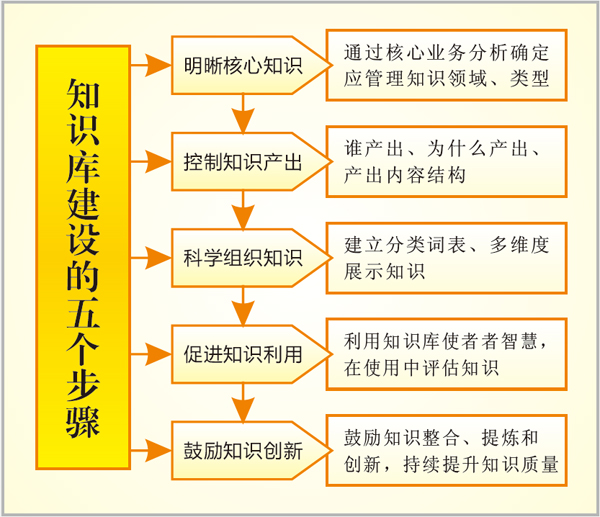

知识管理从建立知识库做起
2011.11.29
在当今知识经济时代，随着竞争的加剧和产业结构的升级，越来越多的中国企业逐渐意识到 知识管理 的重要性以及紧迫性，这些组织迫切的需要用知识管理的理念、方法、工具来提高企业的竞争力，从而在市场竞争中取得竞争优势。作为高度知识密集型的设计企业，更显得尤为迫切。
一、 设计企业的特点
设计企业是典型的技术、知识密集型企业，其员工是典型的知识型员工。所以这个行业在管理上存在一些显著的特征：
1、员工具有很高的自主性
与传统企业相比，设计企业的员工更为强调工作中的自我引导和自我管理，其自身工作时常会体现出强烈的自主性。同时，与传统的体力劳动者不同，知识型员工不仅富于才智，精通专业，而且大多个性突出。因此，传统组织层级中的职位权威对他们往往不具有绝对的控制力和约束力。
2、 员工具有突出的创新能力
设计企业员工从事的大多为创造性劳动。他们依靠自身拥有的专业知识，运用头脑进行创造性思维，并不断形成新的知识成果。因此，创新是设计企业员工最重要的特征。员工在易变和不完全确定的系统中充分发挥个人的资质和灵感，应对各种可能发生的情况，推动着技术的进步。
3、工作成果不易加以直接测量和评价
设计企业员工的工作成果常常以某种思想、创意、技术发明、管理创新的形式出现，并且很多知识创新和科研性成果的形成需要团队的协同合作。因此，对员工特别是个人的工作成果，通常无法采用一般的经济效益指标加以衡量。
对应于上述特征，设计企业在管理上存在一些难点问题，主要归结为人难管理、事难量化、知识难管理这三难问题。这三难问题也是知识大爆炸时代诸如设计企业这种知识密集型企业在管理过程中面对的普遍问题。而知识管理就是这三难问题的解决之道。
目前很多设计企业都没有建立一套自己的知识管理系统，针对此领域的应用和研究也尚不多见。很多设计企业不是不知道知识管理的重要性，也不是缺乏资金，主要还是大多数企业缺乏对知识管理的实质性认识。
知识管理不是简单的上一个系统，而是应该为生产服务，为企业创造效益。因此设计企业想借助知识管理提高生产力，首先就应该改变对知识管理的认识。
二、 设计企业建设知识管理系统的必要性
1、设计本身是一类复杂的智能行为，是一个知识运用和知识创新的过程
设计与多学科相关，涉及各领域的专家知识，如心理学、美学、市场学、计算机技术等等。从知识的角度来看，设计过程本身就是一门“知识”的工作，是一个知识运用和知识创新的过程。要创作一个优良的设计，需要设计师进行知识的整合工作，具备设计开发能力、设计思想的表现能力、综合实际的思考能力等。而要在现代企业中做到这些，就要建立一个与之相应的支撑环境—即相应的知识管理系统。
2、当前设计企业迫切需要一个支持创新设计的信息平台
随着市场竞争的加剧，设计师所面临的挑战越来越大，要寻求新的突破空间也越来越难。有些产品，早期的设计师们已经从不同的角度进行了设计；还有一些产品经历长时间的进化，具备了一些非常完美的设计要素和样本，创新空间很小。在技术上没有获得大的突破的情况下，寻找新的设计突破点，难度可想而知。在这种情况下，如果没有一个完善的设计和管理的信息平台，来进行设计资源的整合，支持设计团队的创新工作，是很难设计出好的作品来的。
3、 设计企业需要一个不断进行设计技术交流和培训的系统
为了保证企业设计的连续性，就有必要保持设计人员的相对稳定。同时又必须为新一代设计师创造机会，为企业产品设计注入新的活力。企业有一支稳定且技术不断进步的设计队伍，是设计出的作品能持续创新的组织保证，企业必须对此作出长远的安排。一个完善的知识管理系统，将具备知识的培养和教育功能，可以为人员和企业的创新设计提供支持。
因此，对知识的有效积累、高度共享、高效创新成为设计企业的一项基础工作，从这个意义上来说设计企业比传统企业更需要知识管理。同时，设计行业信息化发展从以数据管理为核心，到现在多数企业以信息管理为核心，最终必将提升到以运用知识为核心。行业的发展决定了知识管理的必然性，这就要求设计企业建设自己的知识管理系统。
三、 知识库 建设是知识管理的基础
知识管理系统是一项系统的工程，需要“技术”、“管理”和“文化”三重体系的支持。从总体上说，知识管理系统的建立涉及到知识管理理念和知识管理的软硬件支撑两大部分。 其中，知识管理理念包括知识管理目标管理、企业文化、组织结构、企业制度、战略机制等方面的建设，包括建立尊重知识的内部环境，促进员工的知识交流，促进知识的利用和创新等企业制度和企业文化等。知识管理的硬件对应的是知识管理IT平台，它是一个支撑企业知识收集、加工、存储、传递和利用的平台，通过因特网、内联网、外联网和知识门户等技术工具将知识和应用有机整合。知识管理的软件对应的是知识管理系统，它通过文件管理系统、群件技术、搜索引擎、专家系统和 知识库 等技术工具，支撑知识收集加工、存储、传递、利用、创新的平台，使企业显性知识和隐性知识得到相互转化。
经常我们遇到的一个现象就是设计企业内部已有个别部门或者专业所在做自己部门内部的 知识管理 ，他们各自在各自的电脑上进行着自己的“知识管理”，从设计企业整体来看便是知识孤岛。当B部门需要A部门提供资料时，往往需要特意派一个人到A部门去要资料，运气不好的话，赶上知道相关资料的人不在，则白跑一趟，如果人缘差点，还会吃闭门羹，无形中增加了知识共享的成本，打击了员工进行知识共享与学习的积极性。许多员工还经常反映一个问题就是，他们很想把自己的知识贡献给公司，但是不知道怎么贡献，换而言之就是公司没有一个可以让他们上传知识的地方。所以，构建一个企业层面的知识库，让企业各级职员有一个共同上传下载、学习借鉴、交流共享的平台是企业 知识管理 建设的基础。
四、 知识库 建设的关键环节
知识管理是一种企业管理思想，从这个角度来看，信息技术的发展为企业构筑知识管理平台提供了可能。 知识管理 系统的建设不同于企业以往就事论事般的单一项目建设，而是企业管理思想的体现。它不仅仅包括信息系统范畴的内容，还包括企业管理制度的建立健全等。知识管理系统的建设将以知识的积累、共享、交流为手段，以提高企业核心竞争力作为最终目标，企业的所有员工都将受益。
对于设计行业而言，知识管理很重要的一部分是对现有的设计成果的管理。但对一个设计企业而言，很显然 知识管理 又不单单是对设计档案的管理，设计企业的知识管理必须具备两大特征：一是知识管理的范围，除了设计档案外，还应包括法律法规、各类标准规范、设计确认信息、设计交底和各类设计审查（检查、复查）信息、施工现场及回访信息、项目信息、专家意见和数字图书馆等；二是进行知识积累、共享和创新。知识管理的全程就是以流程为纲，知识为本，技术为用的过程。在这个过程中，知识分享和知识创新是最关键的环节。
1、 对知识的全面收集
知识管理 建设的一项重要内容是如何丰富知识库，没有内容的 知识库 就像干涸的大海，如何有效的采集知识内容是评判一个知识库的重要标准。现有的技术资料、设计档案、研究报告如何导入到库中是知识库需要解决的问题。所有用户可以收集图文档内容上传到知识系统，系统时间使用时间越长资源越丰富。
知识库 的性能依赖于其获取知识的质和量，知识获取成为构建知识库的一个“瓶颈”。设计企业的知识包括内部显性知识、外部显性知识和内外隐性知识。知识获取主要有三种方式，即非自动型知识获取、全自动的知识获取和半自动的知识获取。非自动型是主要靠知识工程师将已存在的知识转入知识库的知识获取方式；全自动型式通过建立一种不需要工程师介入的专门的人机交互系统完成知识转入的知识获取方式，这是一种较难实现的方式，它涉及到人工智能的多个研究领域。现在在我们设计行业，借助于图形技术和网络技术，对设计图档、设计文档等进行打印自动收集的方式就属于全自动的方式；半自动型是上述两种方式的结合，也是目前应用较为普遍的一种知识获取方式。
由于显性知识结构化较强，企业可以采用全自动或半自动型方式来获取，如采用基于数据库的知识挖掘方法从先前的数据库挖掘出新颖的、有效的、潜在有用的且最终可被人理解的知识。而隐性知识可以通过专业讨论、知识点评、在线培训、视频会议等交互性较强的非自动型方式来获取。
知识获取的关键是确定知识源。企业中的知识资源或是来自于企业外部，或是产生于企业内部。每个知识源均有显性和隐性之分。比如外部领域专家所拥有的经验属于来自企业外部的隐性知识，内部规章制度属于企业内部显性知识。
2、 对知识的梭理分享
知识只有利用才有价值。知识分享是指知识拥有者与其他个体交换知识的过程。知识分享是设计企业运用知识和创造知识的前提。首先，通过知识的分享，设计企业中优秀设计师个人的设计理念、设计思维和设计经验为更多的人所掌握，充分实现了知识的价值。其次，知识的产生和创新是个体相互交流和组合已有知识的结果。由于每个人的专业和从事工作的限制，个体的思维都有局限性，但是通过相互交流，人们往往能够产生思想的火花，创造更新的知识。知识共享中最大的难点来源于隐性知识的交流分享。在设计企业中，难以用明确的语言和文字表达的、存在于设计师头脑中的隐形知识更多。这时，我们可以用知识管理系统中的知识库解决。知识库将设计师头脑中的专业知识结合在一起，通过组织间人员的紧密协调，将内隐知识转化为外显知识。不同层面知识的共享和整合不仅能够有效的将知识的力量扩散，而且能够提高设计企业的竞争力。
3、 对知识创新的管理
在激烈的竞争环境下，很多设计企业已经意识到，持续的竞争优势来源于自身拥有的知识并不断实现知识的创新。可以说，知识创新是知识管理的最高境界。它可以帮助设计企业实现整体知识规模的拓展以及知识质量的提升，某种程度上它更是一种质的改善过程。知识创新过程并不是一个单独的环节，而常常是对现有知识的分享、挖掘和利用的结果。知识分享为知识挖掘奠定了基础，而知识挖掘将促进新知识的产生。知识通过分享和挖掘，价值得到重新认识或者创造新价值。真正有创造力的员工往往通过重新组合，赋予那些我们熟视无睹的知识以新的意义。
4、建立运营配套制度
知识管理 不仅是通过一些集中数据库来把知识应用者联在一起，而更重要的意义在于要为有效的知识获取、分享和利用创造条件。前面讲到， 知识管理 系统需要“技术”、“管理”和“文化”三重体系的支持。所以，知识库初始化信息完成并上线后，正式进入运营阶段，为确保知识库及时更新、长效运行，需要建立并实践相关管理机制，客户必须在系统建立后考虑开始建立以下知识管理运营的机制：
1）知识管理岗（知识组织）制度，知识库运营过程中，所涉及到不同岗位的岗位职责要求，任职资格等。 通过对人力的规范，对每个岗位知识贡献的规范，确保知识库有活水来源。
2）知识发布规范，知识库中所发布知识的格式要求、标题命名、必填项、用词、字体大小等具体规范细节要求。 通过对知识标准的规范，确保入库的是知识而非数据垃圾，或者无法辨认的信息噪音。
3）知识更新制度，各相关部门、岗位，知识更新频率、数量、时间、更新范围的制度要求。通过更新制度的规范化，确保知识库的更新效率，不会因为更新不及时造成实际用的与知识库的版本时间差过大。
4）知识管理使用规范，知识使用密级设定，保密要求，使用范围和版本应用规定等。 确保知识应用过程中的安全、传播范围，避免知识库权限设定之外的其他人为因素造成使用不规范，对组织造成伤害的情况。
5）知识考评制度，对突出知识贡献的情况予以表彰，对知识管理比较消极的予以惩罚，逐步通过奖惩规定将知识管理纳入日常考核体系。 以正激励和负激励相结合的方式，鼓励员工经常使用知识库，同时也惩戒哪些消极的，抵制的情绪和做法。
五、 知识库 建设的五个步骤
按照知识管理中心对知识管理的研究和咨询实践， 知识库 建设必须遵循以下五个步骤：

1、 明晰核心知识
在设计企业中有各种各样的知识，按知识内涵可分为：核心类知识和一般类知识；按知识类型可分为：文书类知识、专门类知识和特种类知识；按知识形态可分为：显性知识和隐性知识；按企业层次可分为：个人知识、团队知识、部门知识、组织知识、组织间知识；按知识生成可分为：购置设备类知识、知识生产类知识、学习实践类知识和制度建设类知识；按竞争层次可分为：内容类知识、方法类知识和标准类知识。而在知识管理的实践中，并非每类类型知识都需要去管理。所以在知识库建设的初期必须明确要管理的知识类型、其价值在何处，这样才不至于眉毛胡子一把抓，导致核心知识和外围知识都无法很好管理的状况出现。
2、 确定知识来源
人是知识的载体，也是知识产生、组织、利用、创新的源泉。在知识库建设中，必须明晰知识的来源：谁应该产生何种知识，他为什么要产生。如果不能结合组织内的每个岗位、流程去分析，那么就很难要求知识共享，在这种情况下即便产出了“知识”，就类似于案例中展示的知识的价值也不能保证。还有一个问题就是员工为什么要共享，这是知识管理的动力问题。
3、 科学梭理知识
如何将产生出来的知识进行整理、系统化、合理的分类和提供检索工具才能方便人们自如的获取？在工作中产生出来的知识我们经常称作“知识碎片”，大都是不系统、零散的，在知识的组织阶段也需要做“知识碎片”的系统化工作。在案例中，论坛产生的信息和“知识碎片”到底有多少可用性，是一个值得考虑的问题。在知识管理中心的咨询实践中，对于社区、论坛等产出的“碎片”需要先进行第一步的处理，类似于BBS的精华区分类、整理，然后再经过知识的入库流程，加入审核、标准化的工作才能加入知识库。
4、 促进知识利用
知识本身没有价值，只有被利用的知识才能发挥作用。我们经常见到有许多“宏伟”的知识库，但是从来没有人去用。在案例中导致知识不能被充分利用的原因，除了知识本身是“知识碎片”外，还有一个重要的原因是这些知识跟具体的业务是无关的、分离的、“两张皮”的，要解决这个问题需要在第二步做知识的产出分析的同时做知识的利用分析，从知识使用者的角度去分析他们的具体需求：为完成某个工作，需要哪些知识、这些知识该如何表达和传递。
5、 鼓励知识创新
创新并不神秘，只有创新才能赢得持续的竞争优势，而所有的业务、管理、技术创新第一步都是先要有知识创新。在知识原料的基础上，根据需求做知识分析和推理，只有这样才能令到知识库成为源头活水，不断丰富。
六、知识管理与 知识库 涉及的信息技术
●Internet、内部网（Intranet）和外联网（Extranet）
●数据库管理系统（DBMS）
●存贮结构技术（Storage Architectures）
●元数据技术（Metadata）
●推技术（Push Technologies）和拉技术（Pull Technologies）
●群件技术（Groupware）
●数据仓库（Data Warehouse）
●数据挖掘技术（Data Mining）
●多维度分析技术（Multidimensional Analysis）
●图形处理与管理技术（CAD Analysis and Management）
●文档管理技术（Document Management）
●信息查询与检索引擎技术（Information Search andRetrieval Engines）
●工作流技术（WorkFlow）
●共享技术（Sharing Technologies）
●联机分析处理技术（Online Analytical Processing，简称OLAP）
●中间件技术（Middleware）
七、 知识库 建设的六大收益
1、 防止知识流失
员工是设计企业最大的人力资本，也是“知识资本”或“智力资本”，作为一种无形资产和源泉，其知识和经验都存储在各自的大脑里，如果不及时加以保留和保存，一旦人员流动或变化，设计企业将承担知识流失的风险和高额人力资源成本。建立设计企业知识就是要防止知识的流失，降低这种风险和成本。
2、 实现知识共享
知识库着眼于整个单位与各相关单位、各部门、子公司之间的远程异地知识共享。通过知识共享、运用集体的智慧提高应变能力和创新能力，也是设计企业为实现显性知识和隐性知识共享提供新的途径。同时，将分散于各人机器上的设计成果（如设计标准、设计规范、设计图库、设计策划等创作经验）转换到计算机里进行统一管理，并利用计算机的联网（企业局域网）和检索技术，便于员工获得所需的知识资源，保证适当的人、在适当的时间、找到适当的信息/文件，改变了散乱的管理方式，大大利用了现有资源，参考了以往经验，减少了重复劳动，从而提升了员工个人在工作、决策、问题定义和解决等方面的能力。
3、激励员工参与
激励员工参与知识共享，在设立或明确知识归口管理部门和建立知识管理制度下，把员工所拥有的个人经验、方法、诀窍、洞察力、灵感等，通过交流、研讨、总结、报告和利用纸张、录音带等载体形式记录并保存下来，令到组织内的知识得到有效的存储、利用、沉淀、创新和共享，形成良好的组织氛围，逐步转变成知识型组织。
4、推动终身学习
现代企业发展逐渐从依靠资本积累转向依赖于知识积累和更新。对学习的方式也提出了新的要求，即从学校学习将转化为终身学习，以适应知识的不断更新。利用企业知识档案资源进行开发和享用，经常性地开展培训教育活动，不断更新员工的知识，提高其综合素质和创造能力。
5、利用外部知识
在发挥企业知识档案作用的同时，开发、利用和衡量企业外部的知识资源，借鉴他人的成果，利用他人的知识信息和资源。这就需要企业密切与供应商、合伙人、联盟、顾客和竞争者或竞争对手及其他机构（简称客户）的关系，因此，在实际交往活动中，有更多的学习和获取知识的机会，通过挖掘客户的知识库，为我所用，更好地充实企业知识档案和发挥知识的价值作用。
6、增强竞争能力
现代企业竞争是知识竞争。通过从设计档案和各种网络上的资料库或数据库获取所需的知识资源，组织内的知识得到有效的存储、利用、沉淀、创新和共享，形成良好的组织氛围，逐步转变成知识型组织。这是更为迅速、省钱、便捷，更重要的是切合设计企业需要。因此，知识、经验的获取和积累对设计企业竞争力的帮助极大，可以培养企业的创新能力和集体创造能力。同时，不断来提升设计企业文化的内涵。
企业 知识管理 能力决定企业的竞争优势， 设计企业知识 库的质和量又决定知识管理推广和应用的效果。所以，为了提高竞争力，设计企业必须以知识管理为理念首先构建合理有效的知识库，实现经验和知识的有效积累、利用和增值，提升整个设计企业个人和组织的核心竞争力。
——纬衡科技